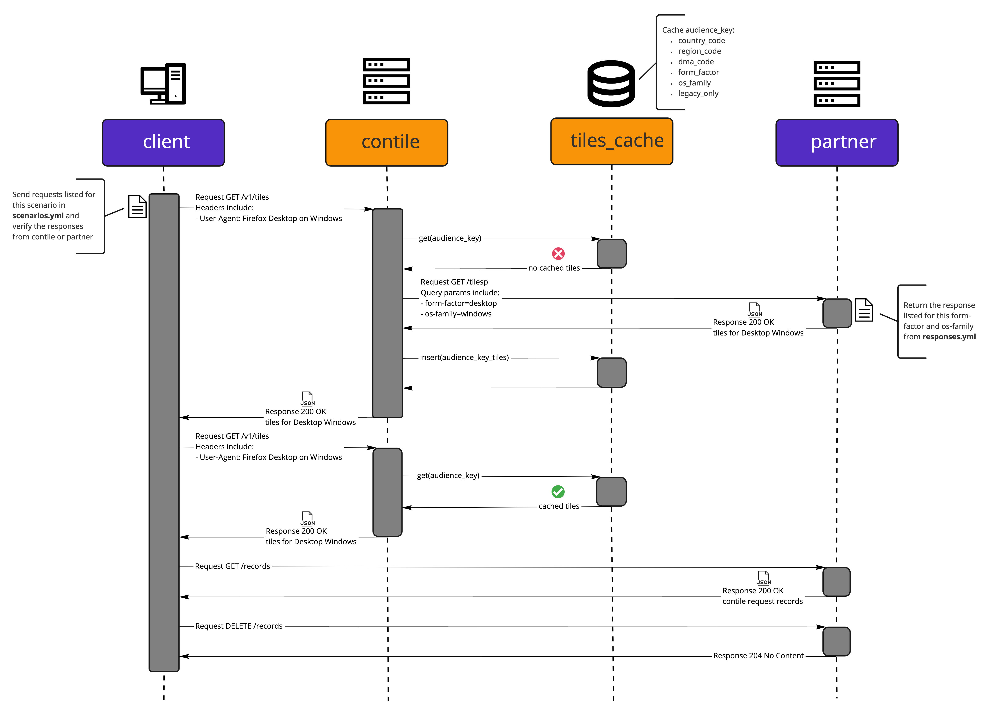

Contile
Contile is a service that fetches tiles to support the Sponsored Tiles feature in Firefox. Sponsored Tiles are a set of display ads appearing on the Firefox New Tab page provided by either a paying partner, or a selected set of other partners.
Table of Contents
Architecture
%%{init: {'theme':'dark'}}%%
flowchart
subgraph GCS[GCS]
ImageStore
Filtering
end
subgraph Firefox
NewTab
end
subgraph ContileDep[ ]
Contile
GCS
MaxmindDb
end
Firefox <-->|v1/tiles| Contile
Firefox <--> ImageStore[(Tiles ImageStore)]
Filtering[(AMP Filtering)] --> Contile
Shepherd -->|Settings File| Filtering
Contile --> MaxmindDb[(MaxmindDb)]
ImageStore --> Contile
Contile <-->|Tiles API| AMP["adMarketplace (AMP)"]
API documentation
Requirements
This system uses Actix web, and Google Cloud APIs (currently vendored).
Development Guidelines
Please see the CONTRIBUTING.md docs on commit guidelines and pull request best practices.
Versioning
The commit hash of the deployed code is considered its version identifier. The commit hash can be retrieved locally via git rev-parse HEAD.
Development Setup
- Install Rust. See rustup.rs for how to install on your platform.
- Compile Contile using
cargo build. - Start a local ADM instance (run from root of Contile repo):
docker run \ --env PORT=5000 \ --env RESPONSES_DIR=/tmp/partner/ \ --env ACCEPTED_MOBILE_FORM_FACTORS=phone,tablet \ --env ACCEPTED_DESKTOP_FORM_FACTORS=desktop \ -v `pwd`/test-engineering/contract/volumes/partner:/tmp/partner \ -p 5000:5000 \ mozilla/contile-integration-tests-partner - Start application by running the command below:
Note that config settings are contained in the
sa-test.tomlfile. You may change settings there that pertain to your local development on Contile.
#! /bin/bash
RUST_LOG=contile=trace,config=debug \
cargo run -- --config sa-test.toml #--debug-settings
- Check that the service can accept requests by running:
curl -v http://localhost:8000/v1/tiles -H "User-Agent:Mozilla/5.0 (Windows NT 10.0; Win64; x64; rv:103.0) Gecko/20100101 Firefox/103.0"
Running
Contile is configured via config files and environment variables. For the complete list of available settings, please see contile::settings::Settings (note, you can use cargo doc --open to generate documentation.) In general, we have tried to provide sensible default values for most of these,
however you'll need to specify the ADM endpoint URL:
CONTILE_ADM_ENDPOINT_URL={Your ADM endpoint} \
cargo run
Please note that the {} indicates a variable replacement, and should not be included. For example, a real environment variable would look like: CONTILE_ADM_ENDPOINT_URL=https://example.com/
Operations and Runbooks
This is where we put all our operational documentation.
How to Rollback Changes
Note: We use "roll-forward" strategy for rolling back changes in production.
- Depending on the severity of the problem, decide if this warrants kicking off an incident;
- Identify the problematic commit and create a revert PR.
If it is the latest commit, you can revert the change with:
git revert HEAD~1 - Create a revert PR and go through normal review process to merge PR.
Testing
This is the source for all testing documentation.
Integration Tests for Contile
This documentation describes the integration tests for the Contile server.
Installation
- First, create a virtualenv installation of python
python -m venv venvor use python3 for Python 3 or higher versionpython3 -m venv venv
This will create a local install of the python. You can then "activate" it by calling
source venv/bin/activate (note, refer to the python virtualenv
documentation for system specific details.)
After activation, you no longer need to specify the path: venv/bin/
- Install requirements.txt in the Test dir
pip install -r requirements.txt
Running the test
There are several integration test related environment variables that may be specified:
| var | description |
|---|---|
| CONTILE_TEST_URL | HTTP URI to the test server. Defaults to http://localhost:8000 |
| CONTILE_TEST_SERVER | Path to the locally compiled Contile server executable. Defaults to contile/target/debug/contile |
| CONTILE_TEST_NOSERVER | Do not attempt to start up the locally compiled Contile server executable |
These are different than the Contile test arguments:
| var | description |
|---|---|
| CONTILE_TEST_MODE | Places the server in "Test Mode". There are several possible test modes available: TestFakeResponse: which will cause it NOT to call out to the ADM server, but use test response files. TestTimeout which will emulate a timeout error when trying to fetch a tile from ADM server. |
| CONTILE_TEST_FILE_PATH | The path to the ADM fake response files. |
| CONTILE_ADM_SETTINGS | The path to the ADM settings to be used for this run |
The tests will provide their own ENV var values for these unless specified as part of the exec command.
(e.g. CONTILE_TEST_FILE_PATH="/tmp/test_data" pytest .)
You can run the tests by running
pytest .
You can specify pytest -sx . if you want tests to stop at the first failure.
The test will attempt to start the locally compiled Contile server (unless CONTILE_TEST_NOSERVER is set) and run the local tests checking for returned values.
Crafting Tests
Tests are included in the TestAdm class. Please note that returned values from a live server may differ significantly from the test data, so examining the return results may need to be blocked by checking if settings.get("noserver") is not set.
The server is started with the CONTILE_TEST_MODE flag set. This will prevent the server from using the remote ADM server and instead pull data from a test directory ./test_data. This contains JSON formatted files. Names must be lower case, contain only alphanumeric and _, and be properly formatted JSON. The application presumes that these files are located in the relative directory of ./tools/test/test_data, however that presumes that you are running in the Project Root directory (The same directory that contains the Cargo.toml file). If this
is not the case, or the test files are in a different path, be sure to update the CONTILE_TEST_FILE_PATH variable to point to the correct
directory. (e.g. if CONTILE_TEST_MODE is set to /tmp/test_data, then test an ADM data DEFAULT response for a request with no Fake-Header would be stored as /tmp/test_data/default.json)
Also note that the test server will use the ../../adm_settings_test.json configuration file. Be sure that your test data responses meets the criteria specified in the adm_settings_test.json file. Like CONTILE_TEST_FILE_PATH if the path or file name is different, be sure to specify the correct value with CONTILE_ADM_SETTINGS.
Tests can specify the data that can be returned by the adm component by including a Fake-Response header, which contains only the file name of the test_data file. (e.g. to include ./test_data/bad_adv.json as the adm response, use Fake-Response: bad_adv)
Contile Contract Tests
The test-engineering/contract/ directory contains the automated contract test suite for the Mozilla Tile Service (MTS). Passing contract tests are a prerequisite for deployment. The contract test framework was originally developed in isolation, which is now archived. See contile-integration-tests.
Overview
The contract test suite is designed to be set up as a docker-compose CI workflow. The following
sections as well as the sequence diagram below describe the individual components of the suite.
Test Scenario: success_tiles_cached_for_identical_proxy_params  The sequence diagram was created with miro
client
The client directory contains a Python-based test framework for the contract tests. The HTTP
client used in the framework requests tiles from the MTS and performs checks against the responses.
The framework implements response models for the MTS API.
For more details see the client documentation
partner
The partner directory contains a Python-based web service. The HTTP API of this service implements
the API specification of the partner API that MTS connects to when requesting tiles to pass along to
Firefox for display.
When a client sends a request to the MTS, information about the client's form factor and OS family
are parsed from the User-Agent header. Then, when the MTS sends a request to the partner API the
form factor and OS family information is included in the query parameters. We use this behavior
to map requests from a client to specific responses from the partner API. We can control the
response content, the response status code, the response headers and can also delay the response
for a period of time, which allows us to effectively test the MTS.
For more details see the partner README
volumes
The volumes directory contains subdirectories which will be mounted as volumes into the Docker
containers used in the contract test suite:
- the volumes/client directory contains YML files which define every test scenario that the contract test suite will run
- the volumes/contile directory contains files that need to be provided to a MTS Docker container such as a partner settings file
- the volumes/partner directory contains a YML file which defines every response that the API returns keyed by form-factor and then os-family
Local Execution
To run the contract tests locally, execute the following from the repository root:
Build Contile Docker Image
docker build -t app:build .
Build Contract Test Docker Images & Execute Tests
docker-compose \
-f test-engineering/contract/docker-compose.yml \
-p contile-contract-tests \
up --abort-on-container-exit --build
Import Sorting, Linting, Style Guide Enforcement & Static Type Checking
This project uses Poetry for dependency management. For environment setup, it is recommended to use pyenv and pyenv-virtualenv, as they work nicely with Poetry.
Project dependencies are listed in the pyproject.toml file.
To install the dependencies execute:
poetry install
Contributors to this project are expected to execute the following tools.
Configurations are set in the pyproject.toml and .flake8 files.
poetry run isort client partner
poetry run black client partner
poetry run flake8 client partner
poetry run mypy client partner
Debugging
The contract testing system is optimized to run within a set of related docker images.
client
See the Debugging section of the client README
Contile
To run the contile service, and it's dependent partner service locally, execute the following from the contract tests root:
docker-compose run -p 8000:8000 contile
Contile runs, by default, on http://localhost:8000/. However, it may be necessary to run the tests
outside of docker, in order to debug functions or manually verify expected results.
Fetching Tiles
Contile will attempt to look up your IP address if you access it using Firefox. The easiest way to
get a test response back would be to craft a curl request. For example (presuming that Contile is
running on http://localhost:8000/v1/tiles):
curl -v \
-H "User-Agent: 'Mozilla/5.0 (Macintosh; Intel Mac OS X 10.15; rv:10.0) Gecko/20100101 Firefox/91.0'" \
-H "X-Forwarded-For: '89.160.20.115'" \
"http://localhost:8000/v1/tiles"
partner
See the Local Execution and Debugging sections of the partner README
Maintenance
The contract test maintenance schedule cadence is once a quarter and should include updating the following:
- poetry version and python dependencies
- Docker artifacts
- CircleCI contract test jobs
- Documentation
- contract tests docs index.md
- client docs client.md
- partner docs partner.md
Contract Test Client
This documentaition describes the Python-based HTTP client test framework for the contract tests.
The HTTP client used in the framework supports:
- Requests for tiles from the MTS, with response checks
- Requests for the history of requests from the MTS to the partner API with response checks
The framework implements response models for the MTS and partner APIs.
For more details on contract test design, refer to the Contile Contract Tests documentation.
Overview
The client is instructed on request and response check actions via scenarios, recorded in the
scenarios.yml file. A scenario is defined by a name, a description, and steps.
Steps
Contile Service
- To direct requests to the MTS service, set the
servicevalue ofrequesttocontile - The expected content for a
200 OKresponse is a collection of tiles
Example:
- request:
service: contile
method: GET
path: '/v1/tiles'
headers:
- name: User-Agent
value: 'Mozilla/5.0 (Windows NT 10.0; rv:10.0) Gecko/20100101 Firefox/91.0'
response:
status_code: 200
content:
tiles:
- id: 12345
name: 'Example COM'
click_url: 'https://example.com/desktop_windows?version=16.0.0&key=22.1&ci=6.2&ctag=1612376952400200000'
image_url: 'https://example.com/desktop_windows01.jpg'
image_size: null
impression_url: 'https://example.com/desktop_windows?id=0001'
url: 'https://www.example.com/desktop_windows'
- id: 56789
name: 'Example ORG'
click_url: 'https://example.org/desktop_windows?version=16.0.0&key=7.2&ci=8.9&ctag=E1DE38C8972D0281F5556659A'
image_url: 'https://example.org/desktop_windows02.jpg'
image_size: null
impression_url: 'https://example.org/desktop_windows?id=0002'
url: 'https://www.example.org/desktop_windows'
Partner Service
- To direct requests to the partner service, set the
servicevalue ofrequesttopartner - The expected content for a
200 OKresponse is a collection of records- Each
recordrepresents a distinct request made by the MTS to the partner - The frequency of a request is denoted by the
count
- Each
- Request history is cleared between scenarios
Example:
- request:
service: partner
method: GET
path: '/records/'
headers:
- name: 'accept'
value: '*/*'
response:
status_code: 200
content:
records:
- count: 1
record:
method: GET
headers:
- name: accept
value: '*/*'
- name: user-agent
value: 'contile/1.8.2'
- name: host
value: 'partner:5000'
path: '/tilesp/desktop'
query_parameters:
- name: partner
value: 'partner_id_test'
- name: sub1
value: 'sub1_test'
- name: sub2
value: 'newtab'
- name: country-code
value: 'US'
- name: region-code
value: ''
- name: dma-code
value: ''
- name: form-factor
value: 'desktop'
- name: os-family
value: 'windows'
- name: v
value: '1.0'
- name: out
value: 'json'
- name: results
value: '5'
Debugging
To execute the test scenarios outside the client Docker container, expose the Contile and partner API ports in the docker-compose.yml, set environment variables and use a pytest command. It is recommended to execute the tests within a Python virtual environment to prevent dependency cross contamination.
Environment Setup
This project uses Poetry for dependency management. For environment setup, it is recommended to use pyenv and pyenv-virtualenv, as they work nicely with Poetry.
Project dependencies are listed in the pyproject.toml file. To install the dependencies execute:
poetry install --without partner
Execution
-
Modify
test-engineering/contract/docker-compose.ymlIn the partner definition, expose port 5000 by adding the following:
ports: - "5000:5000"In the Contile definition, expose port 8000 by adding the following:
ports: - "8000:8000" -
Run Contile and partner docker containers.
Execute the following from the project root:
docker compose -f test-engineering/contract/docker-compose.yml up contile -
Run the contract tests
Execute the following from the project root:
CONTILE_URL=http://localhost:8000 \ PARTNER_URL=http://localhost:5000 \ SCENARIOS_FILE=test-engineering/contract/volumes/client/scenarios.yml \ pytest test-engineering/contract/client/tests/test_contile.py --vv-
Environment variables can alternatively be set in a pytest.ini file or through an IDE configuration
-
Tests can be run individually using -k expr
Example executing the
success_desktop_windowsscenario:pytest test-engineering/contract/client/tests/test_contile.py \ -k success_desktop_windows
-
Contract Tests - Partner
This documentation describes a Python-based web service used for contract tests. The HTTP API of this service implements the API specification of the partner API that MTS connects to when requesting tiles to pass along to Firefox for display.
Overview
Once the API service is running, API documentation can be found at http://0.0.0.0:5000/docs.
Records
GET: Endpoint to retrieve all historical Contile request records with a counter.
Example:
Request
curl \
-X 'GET' \
-H 'accept: application/json' \
'http://0.0.0.0:5000/records/'
Response:
Code: 200
Body:
{
"records": [
{
"count": 1,
"record": {
"method": "GET",
"headers": [
{
"name": "host",
"value": "0.0.0.0:5000"
},
{
"name": "user-agent",
"value": "curl/7.79.1"
},
{
"name": "accept",
"value": "application/json"
}
],
"path": "/tilesp/desktop",
"query_parameters": [
{
"name": "partner",
"value": "demofeed"
},
{
"name": "sub1",
"value": "123456789"
},
{
"name": "sub2",
"value": "placement1"
},
{
"name": "country-code",
"value": "US"
},
{
"name": "region-code",
"value": "NY"
},
{
"name": "dma-code",
"value": "532"
},
{
"name": "form-factor",
"value": "desktop"
},
{
"name": "os-family",
"value": "macos"
},
{
"name": "v",
"value": "1.0"
},
{
"name": "out",
"value": "json"
},
{
"name": "results",
"value": "2"
}
]
}
}
]
}
DELETE: Endpoint to delete all historical Contile request records.
Example:
Request
curl \
-X 'DELETE' \
-H 'accept: */*' \
'http://0.0.0.0:5000/records/'
Response
Code: 204
Body: N/A
Tiles
GET: Endpoint for requests from Contile.
Example:
Request
curl \
-X 'GET' \
-H 'accept: application/json' \
'http://0.0.0.0:5000/tilesp/desktop?partner=demofeed&sub1=123456789&sub2=placement1&country-code=US®ion-code=NY&dma-code=532&form-factor=desktop&os-family=macos&v=1.0&out=json&results=2'
Response
Code: 200
Body:
{
"tiles": [
{
"id": 12346,
"name": "Example COM",
"click_url": "https://example.com/desktop_macos?version=16.0.0",
"image_url": "https://example.com/desktop_macos01.jpg",
"impression_url": "https://example.com/desktop_macos?id=0001",
"advertiser_url": "https://www.example.com/desktop_macos"
},
{
"id": 56790,
"name": "Example ORG",
"click_url": "https://example.org/desktop_macos?version=16.0.0",
"image_url": "https://example.org/desktop_macos02.jpg",
"impression_url": "https://example.org/desktop_macos?id=0002",
"advertiser_url": "https://www.example.org/desktop_macos"
}
]
}
Local Execution
To run the service locally, execute the following from the contract tests root:
docker compose run -p 5000:5000 partner
The mock partner runs, by default, on http://localhost:5000/.
The test URI path is tilesp/desktop for desktop tiles, or tilesp/mobile for mobile tiles.
The following query arguments are required. Optional, undefined elements should be left empty
(e.g. ...&dma-code=&...) Failure to include them will return a 400 error with the missing
variables listed in the response (NOTE: This will produce an unexpected 500 or 502 error in
Contile.)
- partner - string
- sub1 - string
- sub2 - alphanumeric
- country-code - 2 CAPTIAL LETTER Alpha
- region-code - 1 to 3 CAPITAL LETTER AlphaNumeric
- dma-code - Optional Numeric
- form-factor - See
ACCEPTED_{MOBILE,DESKTOP}_FORM_FACTORS - v =
1.0 - out =
json - results = number of tiles to return, usually 2
Debugging
It is possible to run the mock partner app outside of docker. It is STRONGLY suggested to run this within its own Python virtualenv, and possibly its own shell to prevent environment variable cross contamination.
Environment Setup
This project uses Poetry for dependency management. For environment setup, it is recommended to use pyenv and pyenv-virtualenv, as they work nicely with Poetry.
Project dependencies are listed in the pyproject.toml file. To install the dependencies execute:
poetry install
The services: partner block of contract/docker-compose.yml lists the environment and
volumes needed. The following environment variables are used by the mock partner app.
- PORT - default port number
- RESPONSES_DIR - directory to read the Tile Values
- ACCEPTED_MOBILE_FORM_FACTORS - list of allowed
form-factorsfortilesp/mobileresponses - ACCEPTED_DESKTOP_FORM_FACTORS - list of allowed
form-factorsfortilesp/desktopresponses
Execution
Start the mock partner app from inside the mock partner virtualenv using
gunicorn -c config/gunicorn_conf.py --preload -k uvicorn.workers.UvicornWorker main:app
Contile Configuring
Use the following environment variables for Contile to contact the mock partner server:
CONTILE_MAXMINDDB_LOC=${ProjectRoot}/mmdb/GeoLite2-City-Test.mmdb
CONTILE_ADM_ENDPOINT_URL=http://localhost:5000/tilesp/desktop
CONTILE_ADM_MOBILE_ENDPOINT_URL=http://localhost:5000/tilesp/mobile
CONTILE_ADM_QUERY_TILE_COUNT=5
CONTILE_ADM_SUB1=sub1_test
CONTILE_ADM_PARTNER_ID=partner_id_test
CONTILE_ADM_HAS_LEGACY_IMAGE='["Example ORG", "Example COM"]'
CONTILE_ADM_TIMEOUT determines how long to wait for a response from the partner server.
The default value is 5 seconds. You may wish to make this much longer if you're debugging.
These would be in addition to any other settings you wish to use for the Contile server.
The returned tile values are stored in
contract/volumes/partner/${country-code}/${region-code}.yml.
If different values are desired, you can either alter these files or you can copy them into a new
directory and use the RESPONSES_DIR environment variable for the mock partner app.
Contile Load (Locust) Tests
This documentation describes the automated load test suite for the Mozilla Tile Service (MTS) or Contile. The load test framework was originally developed in isolation using Molotov, see the archived repo contile-loadtests.
Related Documentation
Contributing
This project uses Poetry for dependency management. For environment setup, it is recommended to use pyenv and pyenv-virtualenv, as they work nicely with Poetry.
Project dependencies are listed in the pyproject.toml file. To install the dependencies execute:
poetry install
Contributors to this project are expected to execute the following tools for import sorting,
linting, style guide enforcement and static type checking. Configurations are set in the
pyproject.toml and .flake8 files.
poetry run isort common locustfiles
poetry run black common locustfiles
poetry run flake8 common locustfiles
poetry run mypy common locustfiles
Opt-In Execution in Staging (and Production)
To automatically kick off load testing in staging along with your pull request commit, you have to
include a label in your git commit. This must be the merge commit on the main branch, since only
the most recent commit is checked for the label. This label is in the form of:
[load test: (abort|warn)]. Take careful note of the correct syntax and spacing within the label.
There are two options for load tests, being abort and warn.
The abort label will prevent a prod deployment should the load test fail.
Ex. feat: Add feature ABC [load test: abort].
The warn label will output a Slack warning should the load test fail, but still allow for prod
deployment.
Ex. feat: Add feature XYZ [load test: warn].
The commit tag signals load test instructions to Jenkins by modifying the Docker image tag. The
Jenkins deployment workflow first deploys to stage and then runs load tests if requested. The
Docker image tag passed to Jenkins appears as follows:
^(?P<environment>stage|prod)(?:-(?P<task>\w+)-(?P<onfailure>warn|abort))?-(?P<commit>[a-z0-9]+)$.
The docker-image-publish job in .circleci/config.yml defines this process and can be viewed
for more clarity.
Local Execution
Follow the steps bellow to execute the load tests locally:
Setup Environment
1. Configure Environment Variables
Environment variables, listed bellow or specified by Locust, can be set in
test-engineering\load\docker-compose.yml.
| Environment Variable | Node(s) | Description |
|---|---|---|
| (OPTIONAL) CONTILE_LOCATION_TEST_HEADER | master & worker | The HTTP header used to manually specify the location from which the request originated (defaults to X-Test-Location). |
2. Host Locust via Docker
Execute the following from the test-engineering\load directory:
docker-compose -f docker-compose.yml -p contile-py-load-tests up --scale locust_worker=1
Run Test Session
1. Start Load Test
- In a browser navigate to
http://localhost:8089/ - Set up the load test parameters:
- Option 1: Select the
Defaultload test shape with the following recommended settings:- Number of users: 200
- Spawn rate: 3
- Host: 'http://localhost:8000'
- Duration (Optional): 10m
- Option 2: Select the
ContileLoadTestShape- This option has pre-defined settings and will last 10 minutes
- Option 1: Select the
- Select "Start Swarming"
2. Stop Load Test
Select the 'Stop' button in the top right hand corner of the Locust UI, after the desired test duration has elapsed. If the 'Run time' or 'Duration' is set in step 1, the load test will stop automatically.
3. Analyse Results
- See Distributed GCP Execution - Analyse Results
- Only client-side measures, provided by Locust, are available for local execution
Clean-up Environment
1. Remove Load Test Docker Containers
Execute the following from the test-engineering\load directory:
docker-compose -f docker-compose.yml -p contile-py-load-tests down
docker rmi locust
Debugging
See Locust - Running tests in a debugger
Distributed GCP Execution
Follow the steps bellow to execute the distributed load tests on GCP:
Setup Environment
1. Start a GCP Cloud Shell
The load tests can be executed from the contextual-services-test-eng cloud shell.
2. Configure the Bash Script
- The
setup_k8s.shfile, located in thetest-engineering\loaddirectory, contains shell commands to create a GKE cluster, setup an existing GKE cluster or delete a GKE cluster- Execute the following from the
loaddirectory, to make the file executable:chmod +x setup_k8s.sh
- Execute the following from the
3. Create the GCP Cluster
- Execute the
setup_k8s.shfile and select the create option, in order to initiate the process of creating a cluster, setting up the env variables and building the docker image./setup_k8s.sh - The cluster creation process will take some time. It is considered complete, once an external IP
is assigned to the
locust_masternode. Monitor the assignment via a watch loop:kubectl get svc locust-master --watch - The number of workers is defaulted to 5, but can be modified with the
kubectl scalecommand. Example (10 workers):kubectl scale deployment/locust-worker --replicas=10 - To apply new changes to an existing GCP Cluster, execute the
setup_k8s.shfile and select the setup option.- This option will consider the local commit history, creating new containers and deploying them (see Container Registry)
Run Test Session
1. Start Load Test
-
In a browser navigate to
http://$EXTERNAL_IP:8089This url can be generated via command
EXTERNAL_IP=$(kubectl get svc locust-master -o jsonpath="{.status.loadBalancer.ingress[0].ip}") echo http://$EXTERNAL_IP:8089 -
Select "Start Swarming"
- The load test is set up using
ContileLoadTestShape, which has pre-defined settings and will last 10 minutes
- The load test is set up using
2. Stop Load Test
Select the 'Stop' button in the top right hand corner of the Locust UI, after the desired test duration has elapsed. If the 'Run time' or 'Duration' is set in step 1, the load test will stop automatically.
3. Analyse Results
RPS
- The request-per-second load target for Contile is
3000 - Locust reports client-side RPS via the "contile_stats.csv" file and the UI (under the "Statistics" tab or the "Charts" tab)
- Grafana reports the server-side RPS via the "HTTP requests per second per country" chart
HTTP Request Failures
- The number of responses with errors (5xx response codes) should be
0 - Locust reports Failures via the "contile_failures.csv" file and the UI (under the "Failures" tab or the "Charts" tab)
- Grafana reports Failures via the "HTTP Response codes" chart and the "HTTP 5xx error rate" chart
Exceptions
- The number of exceptions raised by the test framework should be
0 - Locust reports Exceptions via the "contile_exceptions.csv" file and the UI (under the "Exceptions" tab)
Resource Consumption
- To conserve costs, resource allocation must be kept to a minimum. It is expected that container, CPU and memory usage should trend consistently between load test runs.
- Grafana reports metrics on resources via the "Container Count", "CPU cores used" and "Memory used" charts
4. Report Results
- Results should be recorded in the Contile Load Test Spreadsheet
- Optionally, the Locust reports can be saved and linked in the spreadsheet:
- Download the results via the Locust UI or via command:
Thekubectl cp <master-pod-name>:/home/locust/contile_stats.csv contile_stats.csv kubectl cp <master-pod-name>:/home/locust/contile_exceptions.csv contile_exceptions.csv kubectl cp <master-pod-name>:/home/locust/contile_failures.csv contile_failures.csvmaster-pod-namecan be found at the top of the pod list:kubectl get pods -o wide - Upload the files to the ConServ drive and record the links in the spreadsheet
- Download the results via the Locust UI or via command:
Clean-up Environment
1. Delete the GCP Cluster
Execute the setup_k8s.sh file and select the delete option
./tests/load/setup_k8s.sh
Maintenance
The load test maintenance schedule cadence is once a quarter and should include updating the following:
- poetry version and python dependencies
- Docker artifacts
- Distributed GCP execution scripts and Kubernetes configurations
- CircleCI load test jobs
- Documentation
Smoke Tests
This documentation describes the smoke test suite for Contile deployments.
Setup
Set runtime environment variables for the runner function that contain trigger
URLs for the clients using the following naming scheme:
CLIENT_URL_<COUNTRY_CODE>
Examples:
CLIENT_URL_US
CLIENT_URL_GB
CLIENT_URL_CH
Example runner invocation
curl -m 70 -X POST <RUNNER_TRIGGER_URL> \
-H "Authorization:bearer $(gcloud auth print-identity-token)" \
-H "Content-Type:application/json" \
-d '{"environments": ["STAGE", "PROD"]}'
Deployment
Smoke tests are executed in the CD pipeline and deployed manually by SRE: Terraform Configuration.